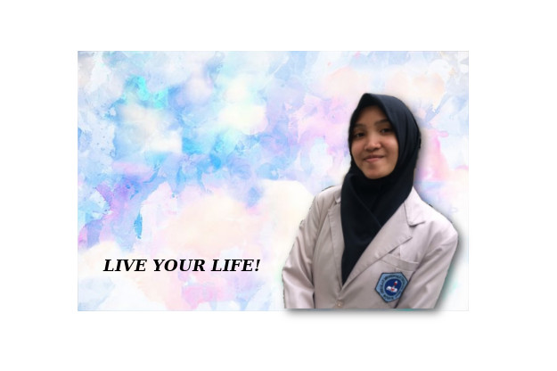
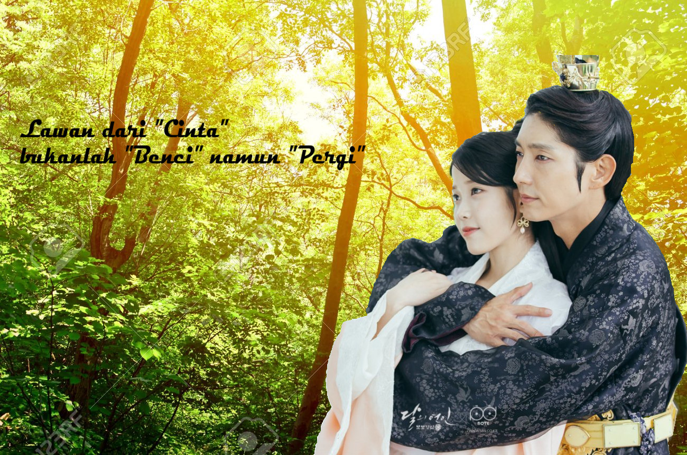

Welcome to the blog of an ordinary girl

Nama lengkap: Shafa'a Puteri Al Zahra
Nama panggilan: Shafaa, Sap, Sapa'a
Tempat tanggal lahir: Jakarta, 23 Juni 2001
Anak ke: 2 dari 3 bersaudara
Pendidikan: SMK - SMAK Bogor
Hobi: Makan, jalan - jalan, memasak, membaca cerita, nonton
film/drama Korea/video, dll.
Cita - cita: High class analyst
Email: puterishafaa@gmail.com
Nama adalah doa. Begitu juga nama yang diberikan oleh kedua orang tua saya. Nama saya Shafa'a Puteri Al Zahra. Shafaa dan Zahra diambil dari bahasa arab. Shafaa dalam bahasa arab artinya adalah jernih/kejernihan, sedangkan Zahra dalam bahasa arab berarti bunga. Lalu sebagai nama tengah, Putri diambil dari bahasa Indonesia yang berarti anak perempuan. Maka jika digabungkan Shafa'a Puteri Al Zahra berarti Anak perempuan yang cantik seperti bunga dan memiliki hati yang jernih. Sebenarnya terdapat kesalahan dalam nama saya, yaitu Shafa'a seharusnya ditulis tanpa tanda kutip atas (Shafaa) dan Al Zahra yang seharusnya adalah Az Zahra. Namun karena sudah terlanjur tertulis di akte kelahiran jadilah nama saya seperti ini.
Setiap orang pasti memiliki kesukaan
/hobinya masing - masing. Hobi setiap orang pun beragam, dari
yang ringan seperti membaca buku dan bermain games hingga
hal yang berat seperti mendaki gunung. Hobi adalah kegiatan rekreasi
yang dilakukan pada wakktu luang untuk menenangkan pikiran
seseorang, dan hal tersebut pun berlaku pada saya. Ketika hari Sabtu
tiba, sepulang sekolah biasanya saya pergi ke mall atau food court
atau ke tempat dimana orang banyak berjualan makanan. Biasanya saya
akan pergi sendirian dan mencoba menu makanan yang berbeda setiap
minggunya, saya lebih senang pergi sendiri ketika berburu makanan.
Mengapa? Karena ketika sendiri, kita akan lebih mudah untuk
mendapatkan tempat duduk walaupun restoran atau tempat makan tersebut
penuh, namun hal yang tidak menyenangkannya adalah, tidak ada teman
untuk berbagi kenikmatan saat makan.
Yang terakhir adalah membaca novel dan
menonton film/ drama korea/ video. Saya yakin kegiatan ini pasti
digemari juga oleh banyak orang. Karena dengan membaca cerita dan
menonton film, kita seperti berada di dunia lain. Dengan membaca
novel kita akan mengkhayal dan membayangkan semua yang ada dalam
cerita tersebut, penulis kesukaan saya adalah Tere Liye, semua novel
tulisannya sangat menyentuh dan membuka pikiran kita, sedangkan untuk
penulis cerita di halaman web, saya sangat suka dengan tulisannya
@crowdstroia. Cerita yang dibuatnya terkesan sangat nyata dan
realistis, bahasa yang digunakannya pun sangat bagus dan tidak
membuat bosan, serta jalan ceritanya yang dibuat sangat apik dan
tidak tertebak. Untuk drama Korea, saya sangat suka dengan drama Moon
Lovers: Scarlet Heart Ryeo, Good Doctor, Doctor Stranger, dan 49
Days. Menurut saya, drama Korea sangat menarik karena cerita yang
dibuat terkonsep dengan sangat baik, kualitas dari visualisasi
gambar, efek suara, serta OST (original sound track) pun tidak dibuat
dengan sembarangan. Sehingga membuat peontonnya selalu penasaran dan
menikmati drama yang sedang ditayangkan

Sebenarnya saya masih bingung ketika ada teman bertanya "Kamu mau jadi apa Sap?", saya sendiri juga masih bingung mau jadi apa, karena cia - cita saya selalu berubah. Waktu SD saya mau jadi polwan, lalu berganti jadi penulis. Ketika SMP saya awalnya ingin jadi guru, tapi kemudian berubah menjadi ginekolog(ahli kandungan) karena ayah saya bilang, sekarang dokter kandungan kebanyakan laki - laki sedangkan tau sendiri kan lah kerjaanya ahli kandungan apa aja. Sewaktu SMA awalnya saya masih mempertahankan cita - cita saya untuk menjadi ginekolog, tapi lama - kelamaan saya rasa itu agak memaksa, secara ginekolog tidak satu jalur dengan kompetensi keahlian yang saya pelajari, yaitu Anallis Kimia. Tapi, apakah dengan sekolah di SMAKBo yang kejuruannya Analis Kimia lantas saya harus jadi analis juga? Kok kesannya seperti pasrah sekali. Maka dari itu, mulai sekarang saya memutuskan ketika ada yang bertanya "Kamu mau jadi apa Sap?" maka saya akan menjawab "High Class Analyst" yaitu analis yang tidak sekedar analis. Jadi apa dong? Ntah saya juga masih berpikir. Selain cita - cita yang mengarah ke suatu pekerjaan, saya juga memiliki mimpi untuk menjadi orang yang bermanfaat bagi orang lain, selamat dunia - akhirat, disayangi banyak orang serta memiliki banyak teman, dan membawa kebahagiaan bagi orang lain. Menurut saya, pencapaian akan mimpi - mimpi saya tersebut adalah pencapaian terbesar dalam hidup saya, dibanding dengan menjadi analis. Mengapa? karena dengan mencapai mimpi - mimpi tadi hidup saya akan terasa lebih berharga dan bermakna.